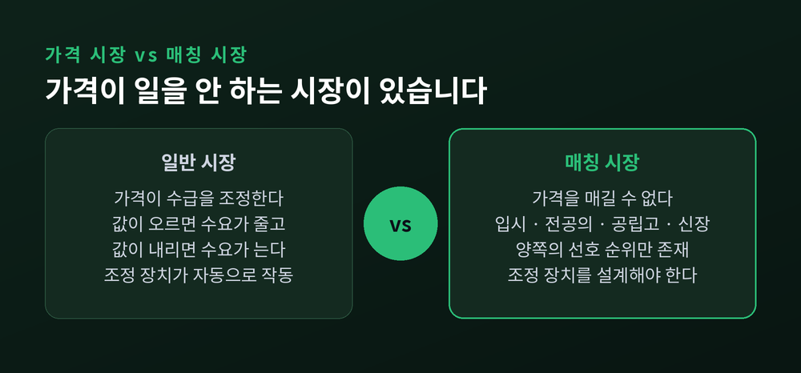
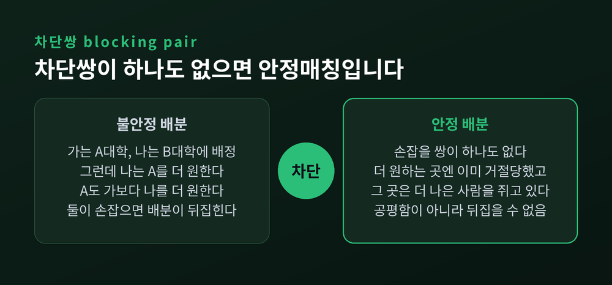
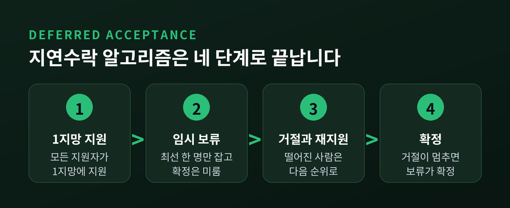
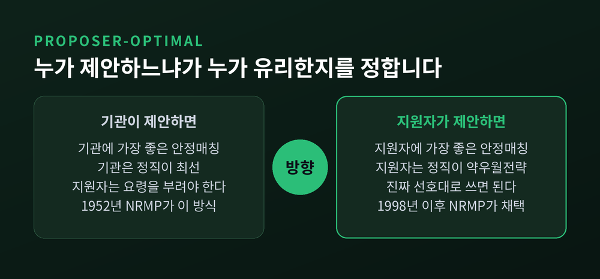
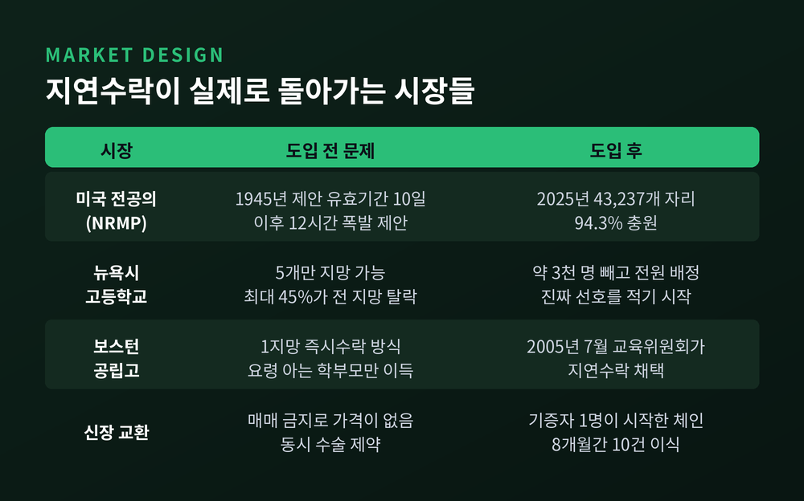
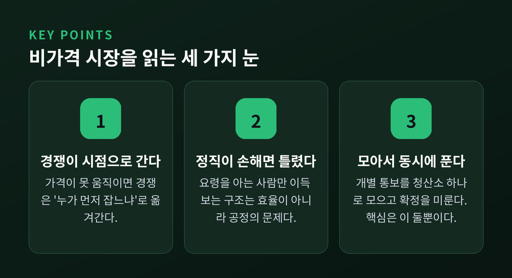

이번 글에서는 게일-섀플리 매칭 이론을 정리해 보겠습니다. 가격이 수요와 공급을 조정해 주지 않는 시장에서, 경제학이 대체 무엇을 할 수 있는지에 관한 이야기입니다. 대학 입시, 전공의 배정, 공립고 배정, 신장 이식이 모두 이 범주에 들어갑니다.
먼저 세 줄로 답을 드립니다.
보통의 시장은 가격이 정리합니다. 사려는 사람이 많으면 값이 오르고, 그 값을 감당할 사람만 남습니다.
그런데 값을 매길 수 없는 거래가 있습니다.
서울대 입학 정원을 경매에 부치지 않습니다. 공립고 자리를 돈으로 사고팔지 않습니다. 신장은 대부분의 나라에서 매매 자체가 금지돼 있습니다.
앨빈 로스는 이런 영역을 혐오 시장(repugnant markets)이라 불렀습니다. "이런 거래는 불쾌하다"는 정서가, 기술적 제약이나 유인 제약과 똑같이 실재하는 제약이라는 뜻입니다.
가격이 빠지면 조정 장치가 사라집니다. 그 자리를 무엇이 채우는가. 이것이 매칭 이론이 다루는 문제입니다.

데이비드 게일과 로이드 섀플리가 1962년 American Mathematical Monthly 69권 1호에 논문을 실었습니다. 제목은 「College Admissions and the Stability of Marriage」, 분량은 9쪽에서 15쪽까지 단 일곱 쪽입니다.
두 사람이 지적한 현실은 지금과 조금도 다르지 않습니다.
대학은 정원 q명을 채우고 싶지만, 합격시킨 사람이 실제로 올지 모릅니다. 그래서 q명보다 많이 뽑습니다. 얼마나 더 뽑을지는 논문 표현대로 "상당히 복잡한 추측"의 영역입니다.
지원자 쪽 사정은 더 딱합니다. 논문은 이렇게 적었습니다. 지원자는 "이 대학이 내 3지망이라고 솔직히 적으면 합격 가능성이 떨어질 것"이라고 느낀다고요.
정직이 손해가 되는 구조. 두 사람이 겨냥한 것은 바로 이 지점입니다.
논문의 정의는 간결합니다.
지원자 α는 A대학에, 지원자 β는 B대학에 배정됐다고 합시다. 그런데 β가 B보다 A를 선호하고, 동시에 A도 α보다 β를 선호합니다.
이 둘은 손잡을 이유가 충분합니다. β가 A에 옮겨가면 둘 다 이득입니다. 배정은 뒤집힙니다.
이런 쌍을 차단쌍(blocking pair)이라 부릅니다. 차단쌍이 하나도 없는 배분이 안정매칭입니다.
여기서 오해하기 쉬운 대목이 하나 있습니다. 안정은 공평하다는 뜻이 아닙니다. 만족도가 높다는 뜻도 아닙니다. 그저 뒤집을 수 없다는 뜻입니다.
원논문 예제를 보면 확실해집니다. 남자 셋과 여자 셋의 선호가 정확히 엇갈린 배열에서, 남자 전원이 1지망과 맺어지고 여자 전원이 꼴찌와 맺어지는 배분이 나옵니다. 여자들 입장에선 최악입니다. 그런데도 안정합니다. 누구와 손잡아도 상대가 응해주지 않기 때문입니다.

지연수락 알고리즘은 세 줄이면 설명이 끝납니다. 지원자 넷(가·나·다·라), 대학 넷(A·B·C·D), 정원은 각 1명으로 두겠습니다.
선호는 이렇습니다.
| 지원자 | 1지망 | 2지망 | 3지망 |
|---|---|---|---|
| 가 | A | B | C |
| 나 | A | C | D |
| 다 | B | A | D |
| 라 | B | C | A |
대학 쪽 선호는 A가 나 > 가, B가 라 > 다, C가 나 > 라 > 가입니다.
1단계. 모두 1지망에 지원합니다. A에는 가와 나가, B에는 다와 라가 몰립니다. A는 나를 붙잡고 가를 떨어뜨립니다. B는 라를 붙잡고 다를 떨어뜨립니다.
여기서 중요한 점. A는 나를 합격시킨 것이 아닙니다. 원논문 표현으로는 "줄에 매달아 둔(keeps him on a string)" 상태입니다. 더 나은 사람이 올지 모르니 확정을 미룹니다. 이 미룸이 바로 '지연수락'입니다.
2단계. 떨어진 가는 2지망 B에, 다는 2지망 A에 지원합니다. B는 라와 가를 비교해 라를 유지합니다. A는 나와 다를 비교해 나를 유지합니다.
3단계. 가는 3지망 C로, 다는 3지망 D로 갑니다. C에는 가만 왔으니 가를 붙잡습니다. D도 다를 붙잡습니다.
종료. 더 이상 거절당한 사람이 없습니다. 매달려 있던 손이 전부 확정됩니다. 가–C, 나–A, 다–D, 라–B.
차단쌍이 있는지 확인해 보시면 좋겠습니다. 가는 A와 B를 더 원하지만 이미 둘 다에게 거절당했고, 그 대학들은 가보다 나은 사람을 쥐고 있습니다. 뒤집히지 않습니다.

증명은 놀랄 만큼 단순합니다.
종료: 어떤 지원자도 같은 대학에 두 번 지원하지 않습니다. 후보가 유한하니 반드시 끝납니다. 원논문은 최대 n² − 2n + 2 단계라고 명시했습니다. 계산이론 쪽 표현으로는 제안 횟수 상한이 n², 시간복잡도가 O(n²)입니다.
안정성: 어떤 사람이 자기 짝보다 다른 상대를 선호한다면, 그는 알고리즘 도중 이미 그쪽에 제안했고 거절당했다는 뜻입니다. 거절했다는 건 상대가 더 나은 사람을 쥐고 있었다는 뜻이고요. 그러니 둘은 손잡을 수 없습니다.
게일과 섀플리 스스로 이 증명을 자랑스러워했습니다. 논문 맺음말에 이렇게 적었습니다. 수식이 하나도 없고, 평범한 영어로만 쓰였으며, "사실 셀 줄조차 몰라도 된다"고요.
단, 이 결과는 양면 구조에 전적으로 기댑니다. 논문이 든 반례가 룸메이트 문제입니다. 네 명이 2인 1실로 나뉘는데 α는 β를, β는 γ를, γ는 α를 1순위로 두고 셋 모두 δ를 꼴찌로 둡니다. 이때는 안정 짝짓기가 아예 존재하지 않습니다. δ와 같은 방을 쓰는 사람은 반드시 나가려 하고, 나머지 둘 중 하나는 받아주니까요.
가장 실무적인 결론이 여기 있습니다.
정리 2: 지원자가 제안하면 그 결과는 모든 안정매칭 중 지원자에게 가장 좋은 것입니다. 대학이 제안하면 대학에게 가장 좋은 것이 나옵니다.
같은 알고리즘인데 방향을 바꾸면 결과가 달라집니다. 게일과 섀플리는 역방향을 미국 대학 동아리의 '러시 위크(rush week)'에 비유했습니다.
전략 문제로 넘어가면 그림이 조금 어두워집니다.
로스의 불가능성 정리(1982) — 모든 참가자에게 진실 보고가 우월전략이 되는 안정매칭 메커니즘은 존재하지 않습니다. 남자 둘, 여자 둘의 2×2 예시만으로 증명이 끝납니다.
더빈스–프리드먼 정리(1981)와 로스 정리(1982) — 그렇다면 한쪽만이라도 지켜주자는 것이 해법입니다. 제안하는 쪽에게는 진실 보고가 약우월전략입니다.
그래서 설계 원칙이 나옵니다. 지원자가 제안하게 하라. 그러면 학생은 요령을 부릴 필요가 없습니다.
기관 쪽 조작 유인은 남습니다만, 기관의 왜곡은 모든 지원자에게 일률적으로 적용되므로 탐지하기가 훨씬 쉽습니다. 투명성 규정으로 제약할 수도 있고요.
한계도 분명합니다. 정원이 2명 이상인 기관은 정리 8의 보호를 받지 못합니다. 정원 2인 기관이 선호를 왜곡해 이득을 보는 반례를 로스가 직접 제시했습니다. 전략증명성은 한 자리만 차지하는 개인에게만 성립합니다.

미국 전공의 시장은 게일-섀플리 논문이 나오기 훨씬 전에 무너져 있었습니다.
1900년대 초부터 병원들이 인턴을 먼저 잡으려고 채용 시점을 앞당겼습니다. 1940년대에는 의대 3학년, 심지어 2학년에게까지 제안이 나갔습니다. 병원은 학생의 실력을 거의 모르는 상태로 뽑아야 했습니다.
1945년에는 제안의 유효기간이 10일로 줄었습니다. 4년쯤 뒤에는 12시간짜리 '폭발하는 제안'이 등장했습니다. 다른 곳에서 연락이 올지 모르는 상태에서 반나절 안에 답해야 했습니다.
가격이 움직이지 못하는 시장에서는 경쟁이 '시점'과 '제한시간'으로 옮겨붙습니다. 이것이 비가격 시장 실패의 전형입니다.
1952년, 미국은 중앙 청산소 NRMP를 가동합니다. 그리고 32년이 지난 1984년, 로스가 이 알고리즘이 병원 제안 지연수락과 동치임을 밝혀냅니다. 논문보다 10년 먼저, 현장에서 독립적으로 발명돼 있었던 셈입니다.
이후 부부 전공의 문제가 불거졌습니다. 두 사람이 같은 도시에 배정되지 않으면 매칭을 거부했거든요. 로스는 1984년에 커플이 있으면 안정매칭 집합이 비어 있을 수 있다는 것을 보였습니다. 나중에는 NP-hard라는 것까지 밝혀졌습니다.
이론적으로는 막다른 길입니다. 그런데 1995년 재설계 책임자로 초빙된 로스가 발견한 것은, 2만 개 넘는 자리의 대규모 시장에서는 안정매칭 집합이 비는 경우가 극히 드물다는 사실이었습니다. 1998년부터 지원자 제안 방식이 도입돼 지금까지 쓰이고 있습니다.
규모를 보시면 감이 오실 겁니다. 2025년 NRMP에는 52,498명이 등록했고, 43,237개 자리가 제공돼 94.3%인 40,764개가 채워졌습니다. 추가 배정까지 합치면 최종 충원율이 99.4%입니다.

뉴욕시 고등학교. 매년 약 7만 5천 명이 426개 학교에 지원합니다. 예전에는 학생이 5개 학교만 적고, 3라운드에 걸쳐 합격·대기·불합격을 주고받았습니다. 동네 밖 학교에 지원한 학생의 최대 45%가 전 지망에서 탈락하는 일이 드물지 않았고, 이들은 여름 내내 기다리다 자기가 적지도 않은 학교에 행정 배정됐습니다. 교육청은 대놓고 "네 경쟁 상대가 누구인지 파악하라"고 안내했습니다. 학교들은 나중에 좋은 학생을 받으려고 정원을 실제보다 적게 신고했고요.
지금은 지연수락 기반 청산소가 돌아갑니다. 약 3천 명을 제외한 전원이 배정됩니다. 학생들이 진짜 선호를 적기 시작했고, 그 덕에 교육당국은 어느 학교를 손봐야 할지 알려주는 진짜 데이터를 얻었습니다. 설계에 참여한 압둘카디로을루가 유리한 전략을 묻는 학부모에게 하는 답은 한 문장입니다. "진짜 선호 순서대로 쓰세요."
보스턴. 기존 방식은 1지망끼리 먼저 자리를 확정해 버리는 즉시수락 구조였습니다. 1지망을 안전하게 쓰지 않으면 크게 손해를 봤습니다. 2005년 7월 보스턴 교육위원회가 지연수락 방식 채택을 의결합니다. 결정적 논거가 인상적입니다. 조사 결과 일부 학부모는 학교 정원 제약까지 계산하는 정교한 전략가였고, 일부는 전혀 그렇지 않았습니다. 그렇다면 전략증명성은 효율성 문제가 아니라 '공정한 접근'의 문제가 됩니다. 요령을 아는 집단만 이득을 보는 구조 자체가 불공정하니까요.
신장 교환. 돈이 아예 개입할 수 없는 극단입니다. 원래는 동시 수술이 원칙이었습니다. 중간에 누가 발을 빼면 기증만 하고 못 받는 사람이 생기니까요. 그 제약을 푼 것이 NEAD 체인입니다. 2007년 7월 단 한 명의 이타적 기증자로 시작된 체인이 8개월에 걸쳐 10건의 이식으로 이어졌습니다. 전국신장등록소 집계로는 성사된 이식의 28% 이상이 체인을 통한 것입니다.
그리고 2012년 10월 15일, 스웨덴 왕립과학원이 앨빈 로스와 로이드 섀플리에게 노벨경제학상을 수여합니다. 사유는 "안정적 배분 이론과 시장설계의 실천"이었습니다. 보도자료의 마지막 평가는 이렇습니다. 경제공학의 탁월한 사례.
한국 이야기를 안 할 수 없습니다.
2018년 한 교육전문지가 기록한 학부모의 경험담입니다. 이미 A대학에 등록금을 낸 학생이 퇴근길에 B대학 추가합격 전화를 받습니다. B대학이 전한 말은 "30분 내로 의사를 정하고 바로 등록금을 납부하라"였습니다.
1949년 미국 병원의 12시간 폭발 제안과 정확히 같은 구조입니다. 단위만 시간에서 분으로 줄었습니다.
문제의 뿌리는 청산소가 없다는 데 있습니다. 대교협의 '대입지원 위반자 사전방지 시스템'은 추합 기간 중 매일 오전을 기점으로 이중등록자를 걸러냅니다. 그래서 마지막 날 발생한 이중등록은 걸러낼 수 없습니다. 그 인원은 결원으로 남고, 원래대로라면 추가합격했어야 할 다른 수험생이 기회를 잃습니다.
대학들은 모집요강에 등록포기기한을 둡니다. 2018 정시 기준으로 고려대 2월 20일 오후 8시, 연세대 오후 9시, 서강대 오후 5시, 성균관대 오후 8시 50분이었습니다. 그런데 강제성이 없습니다. 기한을 근거로 등록금 반환을 거부해 보려 한 대학도 "결국엔 전부 등록을 취소해 주는 것으로 처리했다"고 했습니다.
결국 빠른 등록취소는 수험생의 선의에만 의존합니다. 선의에 기대는 제도는 선의를 지킨 사람이 손해를 보게 만듭니다.
한국 입시가 가격 대신 규칙으로 경쟁한다는 점은 로스 본인도 연구한 바 있습니다. 에이버리·이수형·로스가 2014년 발표한 NBER 20774번 논문 「College Admissions as Non-Price Competition: The Case of South Korea」입니다. 1994년 수능 시점 변경과 조기 전형 도입 전후를 분석했는데, 결론이 날카롭습니다. 지원서 자체가 학생 정보를 드러낼 때, 하위권 대학은 지원 가능 횟수를 제한함으로써 상위권 대학과의 경쟁에서 이득을 볼 수 있다는 것입니다.
지원 횟수 제한이 중립적인 행정 규정이 아니라는 뜻입니다. 그것도 경쟁 전략입니다.
현재 거론되는 개선안들은 사전방지 시스템의 실시간화, 등록취소 접수 창구 일원화, 예비번호의 투명한 공개입니다. 방향이 하나로 모입니다. 한곳에서 동시에 처리하자. 지연수락의 발상과 정확히 같습니다.

정리하면 이렇습니다.
가격이 없는 시장에서도 경제학은 할 일이 있습니다. 값을 매기는 대신, 뒤집히지 않는 규칙을 짜는 일입니다. 게일과 섀플리는 수식 없는 일곱 쪽짜리 논문으로 그 규칙의 존재를 증명했고, 로스는 그것을 병원과 학교와 수술실로 옮겼습니다.
물론 만능은 아닙니다. 양면 구조가 아니면 안정매칭은 아예 없을 수도 있습니다. 양쪽 모두에게 정직이 최선인 방법은 원리적으로 불가능합니다. 정원이 여럿인 기관은 여전히 조작할 수 있고요. 이론은 이 한계들을 숨기지 않고 정리로 못 박아 두었습니다.
그럼에도 남는 문장은 하나입니다 — 좋은 제도란 참가자에게 요령을 요구하지 않는 제도입니다.
30분 안에 결정하라는 전화를 받아본 사람이라면, 이 말이 왜 중요한지 아실 것입니다.